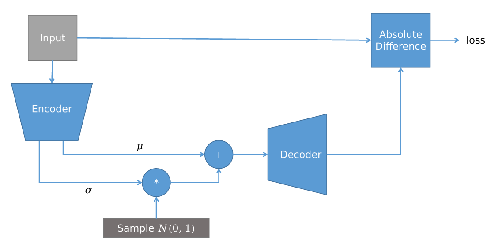

Questions
Autograd and SGD
- a.01 What is the principle behind using Stochastic Gradient Descent (SGD) for optimizing a function w.r.t. its parameters?
- SGD is a technique to find the minima of an optimization problem .
- It is useful for neural networks because the high number of parameters and the non-convexity/non-linearity of typically prevent a closed-form solution. Even in cases where a closed solution exists (e.g., linear regression), SGD can be favored for its lower computational cost.
- It is stochastic because it updates parameters using a small random subset (mini-batch) of the data instead of the full dataset:
- Using mini-batches reduces computational cost per update, introduces noise in the gradient estimates which can help escape local minima, and often leads to faster convergence than full-batch gradient descent
- a.01.1 3 ways to compute derivatives
- Manual differentiation, Symbolic differentiation, Automatic differentiation
- a.02 Explain the concept of function composition in neural networks and how it relates to layers in a model
- Neural networks can be seen as a sequence of composed functions:
where each corresponds to one layer (e.g., linear, activation, convolution).
- Each layer transforms its input and passes it to the next, so the overall network is a composition of transformations.
- This composition allows complex, non-linear mappings to be modeled while keeping gradient computation straightforward via the chain rule:
- Neural networks can be seen as a sequence of composed functions:
- a.03 How do you calculate the derivative of a composed function w.r.t. its inputs?
- We can use the chain rule, in particular by multiplying the derivative of each of the unfolding of the function
- a.04 Describe the unfolding process of a function and its impact on derivative calculation
- The unfolding of a composed function refers to expressing it as a sequence of different function application, as following: (provide example)
- This process allows the derivative of the final output with respect to parameters to be computed using the chain rule across all steps
- a.05 Provide an example of applying the chain rule with multiple variables and binary operators in differentiation.
- a.06 Explain the derivation process for a function involving a binary operator and how it splits the derivation flow.
- Each binary operator (+ - * /) when differentiated splits the derivation flow
- Each binary operator (+ - * /) when differentiated splits the derivation flow
- a.07 What is reverse mode differentiation, and how is it applied to compute derivatives in computational graphs? What is a computational graph?
- A computational graph is a representation of a function as a directed and acyclic graph (DAG)
- Reverse mode differentiation is an automatic differentiation technique that computes the gradient of a scalar output with respect to all inputs efficiently in a single backward pass through the graph.
- a.08 Discuss the concept of forward path and backward path in the context of computational graphs and differentiation
- In a computational graph, the forward path refers to the sequence of computations from the input nodes to the output node(s). During the forward pass, all intermediate values are computed and stored.
- The backward path refers to traversing the graph in reverse to compute gradients of the output with respect to inputs or parameters using the chain rule
- a.09 Describe the differences between forward mode differentiation and reverse mode differentiation in terms of computational efficiency and application.
- one whe or other thing around
- forward has space cost since it can also not store the activation during forward
- I need to repeat the forward for each input or having for each edge a vector with the partials for each input variable
- a.10 How do machine learning frameworks utilize reverse mode differentiation, and what advantages does this offer for building complex architectures? (PyTorch-specific)
- PyTorch uses a dynamic computational graph, meaning the graph is built on-the-fly during the forward pass.
- During the backward pass, PyTorch applies reverse mode differentiation (backpropagation) to compute gradients of a scalar loss w.r.t. all parameters.
- In PyTorch, during the forward pass the autograd engine builds a dynamic CG by recording each operation that involves tensors with
requires_grad=True. Each resulting tensor stores agrad_fnpointing to the function that created it, effectively capturing how it was computed. When you call.backward()on a scalar loss, PyTorch traverses this graph in reverse order using thegrad_fnchain and the chain rule to propagate gradients back through all operations. As the gradients are computed, they are accumulated into the.gradattribute of each leaf tensor withrequires_grad=True(typically model parameters), which the optimizer then uses to update those parameters.
- Advantages for building complex architectures in PyTorch:
- Dynamic flexibility: The graph can change each forward pass, supporting variable-length inputs, conditional computation, and loops.
- Efficiency: One backward pass computes gradients w.r.t. all parameters.
- Automatic differentiation: Gradients are computed automatically without manual derivation (reduces bugs and code for the developer).
- a.11 Draw the computational graph of this expression ...
- a.12 Perform the reverse mode differentiation on that CG
- a.13 Perform the forward mode differentiation on that CG
- a.14 Draw a one-dimensional loss function w.r.t. one parameter. Perform one step of SGD
Tensor algebra and PyTorch
- b.01 Explain the concept of a tensor in PyTorch.
- a tensor is a multidimensional matrix
- In PyTorch, tensors are the core data structure used to represent data, model parameters, and gradients. Tensors support efficient numerical operations and can be stored on different devices (CPU, GPU). PyTorch tensors can track operations to enable automatic differentiation when
requires_grad=True
- b.02 How do the addition and multiplication between tensors work? What is broadcast?
- Tensor addition
+and multiplication are performed element-wise when tensors have the same shape
- When tensor shapes differ, broadcasting may be applied if they are compatible.
- Two dimensions are compatible if they are equal or one of them is , I compare all the dimensions, thus I could have more 1s
- Broadcasting allows operations between tensors of different shapes while preserving element-wise semantics.
- Tensor addition
- b.03 What is the difference between the 'reshape' and 'view' methods in tensor manipulation (row-major tensor algebra)?
- row-major order, meaning that the elements of the last dimension are contiguous in memory
- one change only the indexing of the underlying tensor (view), while reshape will change the underling structure allowing a faster retrieval, but at an higher computational cost
- b.04 Explain the use of reduction operations like '.sum', '.mean', '.max', etc., in tensor algebra.
- Reduction operations aggregate tensor values along one or more dimensions, reducing the tensor’s dimensionality.
x.sum(dim=0)aggregates over rows, producing one value per column. If no dimension is specified, the reduction is applied over all elements, returning a scalar
- b.05 Describe the process of creating a custom dataset using 'torch.utils.data.Dataset'
- it must implement getitem and len
import torch from torch.utils.data import Dataset class MyDataset(Dataset): def __init__(self, X, y): self.X = X self.y = y def __len__(self): return len(self.X) def __getitem__(self, idx): return self.X[idx], self.y[idx] X = torch.randn(100, 5) y = torch.randint(0, 2, (100,)) dataset = MyDataset(X, y)
- it must implement getitem and len
- b.06 What is the 'torch.utils.data.IterableDataset' and how is it used?
- it is a dataset that implements iter() and returns an iterator to the data. Typically the class itself is an iterator, thus implementing next() and returning self() in iter()
import torch from torch.utils.data import IterableDataset class MyIterableDataset(IterableDataset): def __init__(self, X, y): self.X = X self.y = y def __iter__(self): for i in range(len(self.X)): yield self.X[i], self.y[i] X = torch.randn(100, 5) y = torch.randint(0, 2, (100,)) dataset = MyDataset(X, y)
- it is a dataset that implements iter() and returns an iterator to the data. Typically the class itself is an iterator, thus implementing next() and returning self() in iter()
- b.07 How does the 'torch.utils.data.DataLoader' work in PyTorch?
- A data loader combines a dataset and a sampler
- It has some parameters to be set: like the num of workers, batch_size, shuffle, the dataset, and the sampler (sequential, random, weighted random)
from torch.utils.data import DataLoader loader = DataLoader( dataset, # Dataset or IterableDataset batch_size=16, # number of samples per batch shuffle=True, # shuffle data each epoch (for Dataset) num_workers=2 # load data in parallel )
- b.08 Describe the structure and purpose of the
torch.nn.Moduleclassnn.Moduleis the base class for all neural network models and layers in PyTorch.
- It acts as a container that:
- registers learnable parameters and submodules automatically, allowing the .to(device) and the step of the optimizer in gradient computation
- defines how data flows through the model via the forward method.
- Key components and methods:
__init__()to define layers and parameters.forward(x)to specify the forward pass (model logic).parameters()to access all learnable parameters.to(device)to move the module and its parameters to CPU/GPU
- b.09 What are the key methods in a PyTorch module, and how are they implemented?
- b.10 Discuss the training process in PyTorch using the Stochastic Gradient Descent (SGD) algorithm
opt = torch.optim.SGD(model.parameters(), lr=0.001) loss_fn = torch.nn.MSELoss() for epoch in range(n_epochs): for x, y in dataloader: opt.zero_grad() # sets the .grad attribute of all model parameters to zero y_hat = model(x) # forward pass loss = loss_fn(y_hat, y) loss.backward() # computes g for all parameters with requires_grad=True opt.step() # updates model parameters using their gradients
- b.11 Explain the concept and application of batch size in model training
- The batch size defines the number of training samples used to compute one gradient update. It controls the trade-off between gradient accuracy and computational efficiency.
- Smaller batch sizes produce noisier gradient estimates of the true gradient, which can help the optimizer escape shallow local minima. However, very small batches may lead to unstable training or slow convergence.
- Larger batch sizes yield more accurate gradient estimates and better hardware utilization,
but may converge to sharper minima and require more memory.
- b.12 How do you implement a simple linear regression model in PyTorch?
from torch.utils.data import TensorDataset, DataLoader X = torch.randn(B, D) y = torch.randn(B, 1) dataset = TensorDataset(X, y) dataloader = DataLoader(dataset, shuffle=True, batch_size=5) model = torch.nn.Linear(D, 1) opt = torch.optim.Adam(model.parameters(), lr = 1e-3) loss_fn = torch.nn.MSELoss() for epoch in range(num_epochs): for x, y in dataloader: ....
- b.13 Discuss the implementation of a custom model in PyTorch and the steps to train it on a dataset
CNN and ResNets
- c.01 What is a CNN?
- A CNN is a neural network composed of convolutional layers
- A d-dimensional convolution is defined as with (depending on filter sizes)
- In 2D convolution with a single filter having an image of CxWxH and a filter of size CxW’xH’ we will get a feature map of size 1xW’’xH’’
- Convolution is a linear operatonion that has some properties over fully connected linear layers: weight sharing and translation invariance
- In the layer we can set the padding, the stride, and the filter size
- c.02 How does the convolution operation work in CNNs?
- c.03 Explain the significance of kernel size, padding, and stride in convolutional layers.
- c.04 What are the roles of pooling layers in CNNs?
- pooling layer serves to reduce the size of spatial dimensions of features map. In particular we saw 3 types of different pooling layers: max/min/avg
- instead of a weighted sum (as in convolution), pooling applies a simple reduction function
max_pool = torch.nn.MaxPool2d(kernel_size=2, stride=2) # non overlapping
- c.05 Discuss the function of activation functions in CNNs
- Convolutions are linear operations, thus without non-linearities, coposing them will still result in a linear operation, that is incapable of learning non-linear relations. Thus activation functions are foundamental to address this
- c.06 How does a Conv2D layer in PyTorch operate?
conv = nn.Conv2d( in_channels=16, out_channels=32, kernel_size=(3, 3), stride=2, padding=(1, 1))
- c.07 Explain the concept of channels in CNNs and their significance.
- c.08 What are skip connections in CNNs, and how do they function?
- skip connections allows a direct path for gradients to flow deeper in the network. It works by summing the input of a convolution with the result of the convolution itself, a layer with 1x1 filters may be needed to correct channel shapes
- c.09 Define a Residual Network (ResNet) and its advantages in deep learning.
- A resnet is a covolutional NN in which convolutional blocks present residual connections (skip connection)
- In this way gradients are allowed to flow directly through convolutional blocks and more deeper architectures can be trained, avoiding vanishing gradients.
- Prevents the Degradation Problem since if a layer is unnecessary the network will learn , learning easly the identity function
- The network only needs to learn the residual rather than a full transformation from scratch at every layer, thus convergence is often faster and more stable
- c.10 Draw a diagram of a ResNet and its computational graph
- c.11 Explain the concept of feature maps in CNNs
- A feature map is the output of a convolutional layer after applying a filter (kernel) across the input.
- Each feature map highlights the presence of a specific pattern or feature (e.g., edges, textures) in the input. In deeper layers, feature maps capture higher-level, more abstract patterns, allowing the network to recognize complex structures.
- Feature maps are often followed by activation functions and pooling layers, which enhance relevant features and reduce dimensionality
- c.12 Describe the architecture of a typical CNN.
- Conv → BN → ReLU → MaxPool
- First a CNN feature extractor and in case a flatten + FC head to perform classification
- c.13 What are the common challenges in training deep CNNs?
- vanishing → residual
- overfitting → transformation / augmentation
- data scarcity → transfer learning
- c.14 How do residual blocks in ResNets mitigate the vanishing gradient problem?
- c.15 Discuss the application of CNNs in image classification tasks, with an example like MNIST
import torch.nn.functional as F from torch.utils.data import DataLoader from torchvision import datasets, transforms train_loader = DataLoader( datasets.MNIST('.', train=True, download=True, transform=transforms.ToTensor()), batch_size=128, shuffle=True ) class CNN(nn.Module): def __init__(self): super().__init__() self.conv1 = nn.Conv2d(1, 16, kernel_size=3, stride=2, padding=1) self.bn1 = nn.BatchNorm2d(16) self.conv2 = nn.Conv2d(16, 32, kernel_size=3, stride=2, padding=1) self.bn2 = nn.BatchNorm2d(32) self.fc = nn.Linear(dim, 10) def forward(self, x): x = F.relu(self.bn1(self.conv1(x))) x = F.relu(self.bn2(self.conv2(x))) x = x.view(x.size(0), -1) # flatten return self.fc(x)
- c.16 How does the structure of a ResNet differ from a standard CNN?
Recurrent Neural Networks
- d.01 What is a Recurrent Neural Network (RNN), and how does it work?
- A RNN is a neural network designed to process variable length sequences. In particular the network weights will be reused by every elements of the sequence.
- talk about d.03
- The basic RNN will have an hidden state and process the output at time as and
- d.02 Explain the concept of time-varying inputs and outputs in RNNs.
- RNN can handle time-len varying input as follows: each of the following will be processed sequentially by the model.
- In seq to task or
- In seq to seq
- RNN can handle time-len varying input as follows: each of the following will be processed sequentially by the model.
- d.03 Describe two major application families of RNNs: Sequence to Task and Sequence to Sequence
- seq to task will have as input a sequence and as output a downstram task like regression or classification, it will be divided in two modes: end loss, step loss
- seq to seq for translations, summarizaztion, speech to text, …
- d.04 How do RNNs capture temporal dependencies and patterns in sequences?
- RNNs model temporal dependencies through a hidden state that summarizes past information. At each time step, the hidden state is updated as a function of the current input and the previous state:
- This recursive structure allows information from earlier time steps to influence later outputs. The shared parameters across time enable the network to learn sequential patterns independent of sequence length.
- d.05 Discuss the vanishing gradient problem in RNNs and its impact on learning from long sequences.
- this is a problem since in BPTT, the network is unrolled and dependencies from earlier tokens will be vanished due to the chain multiplication of the partial gradients of each cell, typically <1
- As a result, early time-step parameters receive almost no updates. This prevents the network from learning long-term dependencies in sequences.
- LSTM and GRU mitigates this
- d.06 Draw a diagram of a RNN and its computational graph
- draw the rolled version and the unrolled ones
- d.07 What are Long Short-Term Memory (LSTM) networks and how do they address the vanishing gradient problem?
- draw and write formulas, with input, output, forget, candidate memory gates and the computation of memory and hidden state
- The vanishing gradient problem is addressed by adding gates that will learn specifically what to remember and what to forget. Another output wrt the short term hidden state is added and is the memory one, used to model longer term dependencies
- In particular a direct path for the gradient exist when the since
- This is a particular path, since could flow also to the other gates
- d.08 What are Gated Recurrent Unit (GRU) networks and how do they differ from LSTMs?
- draw GRU with new, reset and update gates
- its semplified, less gates, no more the memory
- They merge the input and forget gates into a single update gate
- d.09 Describe the functionality of the three gates in GRUs: reset, update, and new gate.
- write the formulas
- d.10 Explain how to train an RNN for a sequence classification problem.
X = torch.randn(100, 10, 5) # 100 sequences, length 10, feature size 5 y = torch.randint(0, 2, (100,)) # binary labels dataset = TensorDataset(X, y) loader = DataLoader(dataset, batch_size=16, shuffle=True) class SimpleRNN(nn.Module): def __init__(self, input_size=5, hidden_size=20, output_size=2): super().__init__() self.hidden_size = hidden_size self.Wx = nn.Linear(input_size, hidden_size) self.Wh = nn.Linear(hidden_size, hidden_size) self.fc = nn.Linear(hidden_size, output_size) def forward(self, x): h = torch.zeros(x.size(0), self.hidden_size) # [batch, hidden] for t in range(x.size(1)): h = torch.tanh(self.Wx(x[:, t, :]) + self.Wh(h)) return self.fc(h) # use last hidden for classification model = SimpleRNN() optimizer = torch.optim.Adam(model.parameters(), lr=1e-3) criterion = nn.CrossEntropyLoss() for epoch in range(5): for xb, yb in loader: preds = model(xb) loss = criterion(preds, yb) optimizer.zero_grad() loss.backward() optimizer.step()
- d.11 Discuss the considerations for setting up RNNs, LSTMs, and GRUs for a classification task
- d.12 Discuss the challenges in training RNNs and how they can be mitigated
- Training RNNs is challenging mainly due to the vanishing and exploding gradient problems, making learning long-term dependencies difficult.
- Note on the vanishing gradient effect CNN vs RNN
- In CNNs (and deep feedforward networks), vanishing gradients are mainly caused by the depth of the network.
- As gradients are backpropagated through many layers, they may shrink exponentially.
- This makes it difficult to effectively update the early layers of the network.
- In RNNs, vanishing gradients are primarily caused by the length of the input sequence.
- Gradients are propagated through many time steps.
- This limits the model’s ability to learn and retain long-term temporal dependencies.
- In CNNs (and deep feedforward networks), vanishing gradients are mainly caused by the depth of the network.
Autoencoders and VAEs
- e.01 What is an autoencoder, and what are its primary components?
- An autoencoder (AE) is a neural network composed of two main parts: an encoder, which maps the input vector to a lower-dimensional latent representation, and a decoder, which reconstructs the original input from this latent space.
- The model is trained by minimizing a reconstruction loss (e.g. MSE or MAE) between the input and the reconstructed output.
- Autoencoders are used for tasks such as lossy compression, denoising (DAE), and representation learning.
- Several variants exist, such as Variational Autoencoders (VAE) for generative modeling and VQ-VAE with discrete latent representations.
- e.02 Describe the roles of the encoder and decoder in an autoencoder
- dioca uguale a sopra
- e.03 What is meant by the "latent space" in an autoencoder?
- The latent space is a lower-dimensional representation of the input learned by the encoder.
- It encodes the most relevant features of the data needed for reconstruction, discarding redundancy and noise.
- The structure of the latent space reflects similarities in the input data, making it useful for clustering, interpolation, and (in some variants) generation.
- e.04 How does an autoencoder learn a compact representation of input data?
- An autoencoder is trained to reconstruct the input by minimizing a reconstruction loss between the input and the output.
- By forcing the encoder to map the input into a lower-dimensional latent space, the network cannot simply copy the input.
- To minimize the reconstruction error, the model learns to keep only the most informative features, resulting in a compact representation.
- e.05 Discuss the concept of reconstruction error in autoencoders
- The reconstruction error measures the difference between the input and its reconstruction produced by the decoder. It is typically computed using L1 (MAE) or L2 (MSE) loss functions.
- Minimizing this error guides the autoencoder to learn latent representations that preserve the most relevant information via the encoder and a correct reconstruction via the decoder
- e.06 What is a denoising autoencoder, and how does it differ from a traditional autoencoder?
- A denoising autoencoder (DAE) is an autoencoder trained to reconstruct the original clean input from a corrupted version of it.
- During training, noise (e.g. Gaussian noise) is added to the input: , with . The reconstruction loss is computed between the clean input and the output, e.g. .
- e.07 What are Variational Autoencoders, and how do they differ from regular autoencoders?
- Variational Autoencoders (VAEs) are probabilistic autoencoders that model the latent representation as a distribution rather than a single point. The final latent will be sampled from what is called a posterior usign the reparametrization trick.
- The encoder learns parameters of [posterior modelled as a gaussian], and training includes a KL divergence term that regularizes this distribution toward a prior , typically .
- The KL loss is
- This regularization produces a continous and structured latent space, enabling sampling and generation, unlike regular autoencoders.
- e.08 How does the Reparameterization Trick work?
- Directly sampling from is not differentiable, so gradients cannot flow through and .
- The reparameterization trick rewrites the sample as , where
- This makes the operation differentiable with respect to and , allowing the gradient to flow into the encoder during backpropagation.
- e.09 Draw a diagram of a VAE and its computational graph

manca la path di DKL 
{kind=link}
- e.10 Why are VAEs a “generative” architecture?
- VAEs learn a probabilistic latent space that is regularized to follow a known prior distribution, typically . This makes the latent space continuous and well-structured, so latent points can be meaningfully sampled.
- New samples are generated by sampling and passing it through the decoder, enabling data generation and data augmentation, unlike standard autoencoders.
- e.11 What is the Kullback-Leibler divergence, and how is it used in VAEs?
- homosexual distance measure, that is not a distance and helps to regularize VAEs latent space
- e.12 Describe a practical implementation of training a simple autoencoder on the MNIST dataset
train_loader = DataLoader( datasets.MNIST('.', train=True, download=True, transform=transforms.ToTensor()), batch_size=128, shuffle=True) class AE(nn.Module): def __init__(self): super().__init__() self.encoder = nn.Sequential(nn.Linear(28*28, 128), nn.ReLU(), ...) self.decoder = nn.Sequential(nn.Linear(32, 128), nn.ReLU(), ...) def forward(self, x): z = self.encoder(x) return self.decoder(z) model = AE() loss_fn = nn.MSELoss() optimizer = torch.optim.Adam(model.parameters()) for x, _ in train_loader: x = x.view(x.size(0), -1) # from B x 28 x 28 -> B x 784 x_hat = model(x) loss = loss_fn(x_hat, x) optimizer.zero_grad() loss.backward() optimizer.step()
- e.13 Explain the procedure for training a Variational Autoencoder on the MNIST dataset
class SimpleVAE(nn.Module): def __init__(self, input_dim=784, latent_dim=32): super(SimpleVAE, self).__init__() self.encoder = nn.Sequential(nn.Linear(28*28, 128), nn.ReLU(), ...) self.decoder = nn.Sequential(nn.Linear(32, 128), nn.ReLU(), ...) self.mu_head = nn.Linear(300, latent_dim) self.std_head = nn.Linear(300, latent_dim) def encode(self, x): h = self.encoder(x) mu = self.mu_head(h) std = torch.abs(self.std_head(h)) # ensure positivity return mu, std def forward(self, x): mu, std = self.encode(x) q = Normal(mu, std) z = q.rsample() # Reparameterization trick return self.decoder(z), mu, std def vae_loss(x_hat, x, mu, var): recon_loss = nn.functional.mse_loss(x_hat, x) kl_loss = -0.5 * torch.sum(-1 - var.pow(2) - mu.pow(2) - torch.log(var**2)) return recon_loss + kl_loss model = VAE() optimizer = torch.optim.Adam(model.parameters()) for x, _ in train_loader: x = x.view(x.size(0), -1) x_hat, mu, logvar = model(x) loss = vae_loss(x_hat, x, mu, logvar) optimizer.zero_grad() loss.backward() optimizer.step()
- e.14 How does the “Face Swap” algorithm work?
- Two datasets A and B contain face images of two different people.
- A shared encoder is trained to map faces from both datasets into a common latent space that captures pose, expression, and lighting ...
- Two separate decoders, one per identity, learn to reconstruct faces using the shared latent representation.
- At inference time, encoding a face of person A and decoding it with the decoder of person B produces a face with person B’s identity but person A’s pose and expression, effectively swapping the faces.
VQ-VAES
- f.01 What is a Vector Quantized Variational Autoencoder (VQ-VAE)?
- A VQ-VAE is a type of Variational Autoencoder that uses a discrete latent space instead of a continuous one.
- The encoder maps the input to a latent representation, which is then quantized by mapping it to the closest vector in a learned codebook. This produces discrete indices that represent the input. The decoder reconstructs the input from the corresponding codewords retrieved from the codebook using these indices.
- The model is trained using a combination of:
- Reconstruction loss: ensures the output resembles the input.
- Codebook loss: updates the codebook vectors to match the encoder outputs.
- Commitment loss: encourages the encoder outputs to stay close to the selected codebook vectors.
- f.02 Explain the process of mapping input data to a continuous latent space and then to discrete codes in a VQ-VAE
- The input is first passed through the encoder, producing a continuous latent representation.
- This representation is reshaped into a matrix of size , where N is the number of latent vectors and D their dimensionality.
- A codebook is used, containing M discrete codewords.
- The distance between each latent vector and each codeword is computed using an operation such as
cdist, resulting in a distance matrix of size , where the entry is the distance between the i-th latent vector and the j-th codeword.
- By applying
argminover each row of this matrix, the index of the nearest codeword is selected for each latent vector, yielding N discrete indices.
- These indices are then used to retrieve the corresponding codewords from the codebook, which are passed to the decoder for reconstruction.
- f.03 How does the vector quantization process work in a VQ-VAE, and what is the role of the codebook?
- For each encoder output , the quantization step selects the codeword in the codebook that minimizes the Euclidean distance:
- The selected codeword is then used as the latent representation passed to the decoder.
- The codebook acts as a finite set of representative latent vectors that discretize the latent space, forcing the model to compress information into a limited number of symbols.
- During training, the codebook vectors are updated to better match the encoder outputs, while a commitment loss encourages the encoder to stay close to the selected codewords.
- f.04 How does the quantization trick work?
- The vector quantization step involves non-differentiable operations such as
argminand the selection of discrete codewords, which would normally block gradient backpropagation.
- Let be the reshaped continuous output of the encoder and the corresponding selected codewords from the codebook.
- The forward operation is defined as
- In the backward pass, gradients are copied directly to , effectively treating the quantization step as the identity function for gradient computation
- The vector quantization step involves non-differentiable operations such as
- f.05 Draw a diagram of a VQ-VAE and its computational graph
- f.06 Describe the function of the 'cdist' function in PyTorch in the context of VQ-VAEs
- compute the distance between rows of two matrixes
- f.07 What is the responsibility of the decoder in a VQ-VAE, and how does it utilize discrete codes for data reconstruction or generation?
- The decoder is responsible for reconstructing the original input data from the quantized codewords selected from the codebook and maps them back to the data space.
- During training, the decoder is optimized using a reconstruction loss, which measures how accurately the reconstructed output matches the original input.
- f.08 Discuss the types of losses used in training a VQ-VAE, specifically reconstruction, codebook, and commitment loss.
- f.09 Explain the practical steps involved in training a VQ-VAE on the MNIST dataset
mnist = datasets.MNIST(".", download=True, transform=transforms.ToTensor()) dl = DataLoader(mnist, batch_size=32, shuffle=True) class AE(torch.nn.Module): def __init__(self): super().__init__() self.codebook = nn.Parameter(torch.rand(30, 5)) self.encoder = torch.nn.Sequential( nn.Linear(28*28, 32), nn.BatchNorm1d(32), nn.ReLU(), nn.Linear(32, 20) ) self.decoder = torch.nn.Sequential( nn.Linear(20, 32), nn.BatchNorm1d(32), nn.ReLU(), nn.Linear(32, 28*28) ) def forward(self, x): x = x.view(x.shape[0], -1) x = self.encoder(x) x = x.reshape(x.shape[0], 4, 5) dists = torch.cdist(x, self.codebook) # 4 x 30 codes = torch.argmin(dists, dim=-1) q = self.codebook[codes] loss_commit = nn.functional.mse_loss(q.detach(), x) loss_codebook = nn.functional.mse_loss(q, x.detach()) q = (q - x).detach() + x q = q.reshape(x.shape[0], 20) x = self.decoder(q) x = x.view(x.shape[0], 1, 28, 28) return x, loss_commit + 0.25*loss_codebook loss_fn = torch.nn.MSELoss() model = AE() opt = torch.optim.Adam(model.parameters(), lr=1e-3) for epoch in range(5): for x, _y in dl: x_hat, loss_other = model(x) loss = loss_fn(x_hat, x) + loss_other opt.zero_grad() loss.backward() opt.step()
- f.10 Explain how to generate images from random codes in a VQ-VAE and the insights it provides
- To generate images in a VQ-VAE, discrete codes are sampled directly from the codebook
- If you simply picked random indices from the codebook (Uniform Sampling) and fed them to the decoder, you would get static noise or a collage of some small structures, randomly connected
- Typically to do so, we need something like PixelCNN, a prior to learn and thus randomly select only the first codeword
GAN
- g.01 What are Generative Adversarial Networks?
- Generative Adversarial Networks (GANs) consist of two neural networks trained simultaneously: a generator and a discriminator.
- The discriminator learns to distinguish between real data samples and fake samples produced by the generator (binary classificator), while the generator learns to produce samples that fool the discriminator.
- The two networks are trained with opposing objectives:
- The generator tries to minimize , where is a random noise vector.
- The discriminator tries to minimize .
- This adversarial training process leads the generator to produce increasingly realistic samples over time.
- Adversarial training is a learning paradigm in which a model is trained in opposition to another model, such that one improves by exploiting the weaknesses of the other. In practice, this often involves alternating optimization between the two networks.
- g.02 Describe the architecture of GANs, including the roles of the generator and discriminator.
- g.03 Explain how the discriminator functions as a binary classifier in GANs.
- g.04 Outline the steps involved in training the discriminator and generator in a GAN.
- Discriminator training step:
- Take a batch of real samples and a batch of fake samples generated from random noise .
- Compute the loss .
- Update discriminator parameters to minimize
- Generator training step:
- Generate fake samples from random noise .
- Compute the loss
- Update generator parameters to minimize (i.e., fool the discriminator).
- Training procedure:
- Repeat alternating updates: first update the discriminator on real and fake samples, then update the generator using the discriminator’s feedback. Over time, this adversarial process leads the generator to produce increasingly realistic samples.
- Training G after D ensures it gets meaningful gradients, since it uses D to compute its loss
- Discriminator training step:
- g.06 Draw a diagram of a GAN and its computational graph
- g.07 What is an Auxiliary Classifier GAN (ACGAN), and how does it differ from standard GANs?
- In an ACGAN, the generator takes as input both random noise and a categorical class label , allowing it to generate samples conditioned on a specific class.
- The discriminator outputs two predictions: fake/real and the class
- This setup allows generating class-conditional samples, for example, producing MNIST digits of a specific number on demand
- g.07.1 Draw ACGAN diagram for generator/discriminator
- g.08 Discuss the challenges in training GANs and strategies to overcome them
- Challenges:
- GAN training is inherently unstable due to the adversarial setup: the generator and discriminator must be carefully balanced (initialization, hyperparams, architecture)
- Discriminator Overpowers Generator: If D becomes too proficient early on, it can easily distinguish real samples from fake ones. The loss for G if (meaning D is confident the sample is fake), the gradient for becomes very small (vanishes). G essentially stops learning.
- Generator Overpowers Discriminator: Conversely, if G quickly learns to produce samples that fool D, D might struggle to provide useful gradients, hindering its ability to guide G towards generating more realistic samples across the entire data distribution.
- Mode collapse in GANs refers to a scenario where the generator produces a limited variety of samples, often focusing on a few modes of data distribution while ignoring large parts of the data distribution.
- GAN training is inherently unstable due to the adversarial setup: the generator and discriminator must be carefully balanced (initialization, hyperparams, architecture)
- Strategies to improve stability:
- Use Batch Normalization (BN) in the networks and normalize images to the range . Initialize CNN weights close to zero and BN scale parameters close to one.
- Prefer convolutional layers (CNNs) over fully connected (FC) layers for image generation (DCGAN). Replace max pooling with strided convolutions.
- Use small learning rates
- Challenges:
- g.09 Describe the process of training a Deep Convolutional GAN (DCGAN) on the MNIST dataset
class G(nn.Module): def __init__(self): super().__init__() self.net = nn.Sequential(nn.Linear(100,256), nn.ReLU(), nn.Linear(256,784), nn.Tanh()) def forward(self,z): return self.net(z) class D(nn.Module): def __init__(self): super().__init__() self.net = nn.Sequential(nn.Linear(784,256), nn.LeakyReLU(0.2), nn.Linear(256,1), nn.Sigmoid()) def forward(self,x): return self.net(x) data = DataLoader(datasets.MNIST('./data',train=True,download=True,transform=transforms.Compose([transforms.ToTensor(),transforms.Normalize([0.5],[0.5])])), batch_size=128, shuffle=True) optG,optD = optim.Adam(G.parameters(), lr=2e-4), optim.Adam(D.parameters(), lr=2e-4) bce = nn.BCELoss() for epoch in range(5): for x, _ in data: x = x.view(x.size(0), -1) bs = x.size(0) real, fake = torch.ones(bs,1), torch.zeros(bs,1) z = torch.randn(bs,100) # Discriminator D_real = D(x) D_fake = D(G(z).detach()) lossD = bce(D_real, real) + bce(D_fake, fake) optD.zero_grad(); lossD.backward(); optD.step() # Generator z = torch.randn(bs,100,device=device) lossG = bce(D(G(z)), real) optG.zero_grad(); lossG.backward(); optG.step()
- g.10 How can the balance between randomness and class information be maintained in an ACGAN?
- You can use the torch.nn.Embedding to project integers into vectors
- If your ACGAN does not generate conditional images (ignore the class information) you can weight the validity and classification losses
- The generator input combines random noise and a class label . Class labels can be projected into vectors using, for example,
torch.nn.Embedding, and then concatenated with the noiseembeddings = self.embedding(classes) latent = torch.mul(noise, embeddings) cnn_latent = self.proj_to_cnn(latent) embeddings = self.embedding(classes) mu = self.proj_to_mu(embeddings) logvar = self.proj_to_logvar(embeddings) std = torch.exp(0.5*logvar) colored_noise = torch.distributions.Normal(mu, std).rsample() noise = colored_noise + white_noise cnn_latent = self.proj_to_cnn(noise)
- During training, the generator may ignore the class information if the adversarial (validity) loss dominates the classification loss, to prevent this, you can weight the two losses appropriately
Advanced Architectures
- h.01 What is YOLO (You Only Look Once) in the context of object detection, and how does it perform real-time detection?
- YOLO is a convolutional neural network for object detection that predicts bounding boxes and class probabilities directly from the input image in one forward pass (RT object detection).
- The network divides the image into a grid and, for each grid cell, predicts boxes:
- Whether an object is present (objectness score), The bounding box coordinates (x, y, width, height), The class probabilities for the object.
- After predictions, Non-Maximum Suppression (NMS) is applied to remove overlapping boxes and retain only the most confident detections.
- h.02 Explain how YOLO divides an image into a grid for object detection and how it predicts bounding boxes and class probabilities
- Each grid cell is responsible for detecting objects whose center falls inside the cell.
- h.03 Describe Non-Maximum Suppression (NMS) and its role in object detection
- Non-Maximum Suppression (NMS) is a post-processing technique used to remove redundant or overlapping bounding boxes, by keeping only the most confident and non-overlapping
- The standard greedy algorithm for NMS generally follows these steps:
- Thresholding: All candidate boxes with a confidence score below a specific threshold are immediately discarded to remove weak predictions.
- Sorting: The remaining boxes are sorted in descending order based on their confidence scores.
- Selection: The box with the highest score is selected as a valid detection.
- Suppression: The algorithm compares the selected box with all other remaining boxes. If the IoU (Intersection over Union) between the selected box and another box exceeds a defined threshold (e.g., 0.5), the lower-score box is suppressed (assumed same object)
- Iteration: goto 3 until no bounding box remaining
- h.04 What is Faster R-CNN, and how does it combine a Region Proposal Network (RPN) with a CNN?
- Faster R-CNN is a neural network composed of three main parts:
- Feature Extraction: The CNN processes the input image to generate a shared Feature Map.
- Region Proposals: This Feature Map is fed into the RPN, which predicts roughly 1000 region proposals (bounding boxes) where objects might exist
- RoI Pooling & Classification: The RoI Pooling (region of interest) layer crops the RPN proposals regions and resizes them into a fixed dimension (e.g., ) regardless of the original box size. These standardized features are then flattened and fed into the fully connected Detection Head to predict the class and refine the box coordinates.
- Faster R-CNN is a neural network composed of three main parts:
- h.05 Explain the U-Net architecture and its application in semantic image segmentation
- U-Net is a fully convolutional neural network composed of two main parts:
- Encoder (contracting path): reduces the spatial dimensions of the input while extracting high-level features.
- Decoder (expanding path): upsamples the features to reconstruct the original image resolution.
- Skip connections link corresponding layers in the encoder and decoder, allowing the decoder to use high-resolution features for more precise segmentation and improving gradient flow.
- Application: U-Net is widely used in medical image segmentation, where accurate delineation of structures (e.g., organs, tumors) is critical.
- U-Net is a fully convolutional neural network composed of two main parts:
- h.06 What is CLIP (Contrastive Language-Image Pretraining) by OpenAI, and how does it combine vision and language
- CLIP is a dual-encoder model that learns to embed images and text into a shared latent space such that matching image-text pairs have high similarity.
- Training procedure:
- A dataset of image-text pairs is fed to two encoders
- The encoders produce latent vectors for images and text.
- A similarity matrix is computed between all image and text embeddings in a batch.
- Loss function:
- The objective is a diagonal similarity matrix, meaning each image matches its paired text, and no other embeddings.
- Contrastive loss is a type of loss function used to bring related items closer in a latent space and push unrelated items apart. CLIP uses contrastive loss with two terms:
- Image → Text:
- Apply softmax over the text embeddings (columns) and use cross-entropy to maximize the similarity with the correct paired text.
- Purpose: ensures that each image is closest to its correct textual description, so the model learns to associate images with their corresponding text.
- Text → Image:
- Apply softmax over the image embeddings (rows) and use cross-entropy to maximize the similarity with the correct paired image.
- Purpose: ensures that each text description is closest to its correct image, reinforcing the alignment from the language side.
- Image → Text:
- This contrastive training aligns images and text in the same latent space, enabling zero-shot image classification (class never seen in training) and image-text retrieval.
- h.07 Discuss Denoising Diffusion Probabilistic Models (DDPM) and Latent Diffusion, and their role in generating high-quality samples
- DDPM (Denoising Diffusion Probabilistic Models):
- Generative models that learn to reverse a gradual noising process (not autoregressive since all pixels together)
- Training involves adding noise to real images step by step and learning a neural network to denoise at each step.
- Generation starts from pure noise, and the model progressively denoises it to produce a realistic image.
- Latent Diffusion Models (e.g., Stable Diffusion):
- Improve computational efficiency by performing diffusion in the latent space of an autoencoder instead of the full pixel space.
- The image is first encoded into a lower-dimensional latent representation, the diffusion model denoises in this smaller space, and finally a decoder reconstructs the high-resolution image.
- DDPM (Denoising Diffusion Probabilistic Models):
- h.08 Describe the DALL-E 2 architecture
- DALL-E 2 is a text-to-image generation model that creates images from natural language descriptions.
- A text encoder (e.g., CLIP text encoder) converts the input prompt into a text embedding.
- A prior model predicts a corresponding image embedding in the CLIP latent space from the text embedding. This step is often implemented with a diffusion model.
- An image decoder (diffusion-based) generates the final image from the predicted image embedding.
- During training a CLIP loss aligns the text embedding with the embedding of the real image, teaching the model that the text and image should be close in the shared latent space.